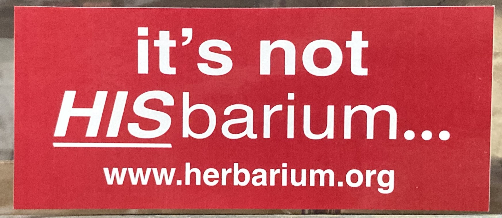

Committee for The W. T. Batson Endowment
for the A. C. Moore Herbarium
John M. Herr, Jr., Professor Emeritus of Biology, USC-Columbia, Chair
John B. Nelson, Curator of the A. C. Moore Herbarium, USC-Columbia
Lucrecia Herr, Midlands Master Gardeners Association
Harry Shealy, Professor of Biology, USC-Aiken
Douglas A. Rayner, Professor of Biology, Wofford College
W. Michael Dennis, President, Breedlove, Dennis, & Associates, Longwood, Florida
Mark Dutton, Fort Jackson, Columbia, SC
Vinnie Suarez, Senior Director of Development, College of Arts and Sciences, USC-Columbia
May 7, 2002 marked the 90th birthday of Distinguished Professor Emeritus Wade T. Batson, "Dr. B" to his
colleagues and students.
It is easy to recall Dr. B to his former students because they will probably never forget the field trips they
took with
him in all kinds of weather. Throughout his career, Dr. B served as the first official curator of the A. C.
Moore Herbarium
at USC, and he worked tirelessly to maintain and enlarge it. Today it is the repository of over 110,000
specimens and provides
significant service to the Department of Biological Sciences and to the community as well. Citizens throughout
the Southeast
and elsewhere may request identification of plants they have
found, and the herbarium
provides this service free of charge.
To commemorate Dr. B's long service to the herbarium and to honor him on his 90th birthday an endowment was
established in the USC Educational Foundation to support the herbarium and assure its continuation as an
important
scientific and service facility at USC. Through the efforts of many of Dr. B's former students, colleagues,
and
friends throughout South Carolina, the endowment has undergone significant growth, but is still far from the
committee's initial goal of $200,000. We hope you will want to become a part of this effort. Contributions can
be
made online at the link below, or by a check payable to the USC Educational Foundation and marked for the
Batson
Endowment for the Herbarium. "Batson" and "Herbarium" must appear on your check in order for your gift to be
placed in the proper fund. Contributions should be sent to:
USC Educational Foundation
Gift Processing
University of South Carolina
1027 Barnwell Street
Columbia, SC 29208
The herbarium for the most part relies on external support from grants and contributions to carry out its
mission.
You may be aware that USC and the Department of Biological Sciences face serious budget shortfalls. Be assured
that
your gift will be prudently used.
Other Ways to Give: Bumper Stickers
- HONK! to Support Your Local Herbarium -
If your car is in need of decoration, or if you'd like to help spread the word, please consider
one of our stylish new bumper stickers. Available in two styles and made of quality materials. Donations are
welcome but not required. Please limit 1 per person.
Style 1
Garnet with white text, measures 3.75 × 7.5 inches and reads as follows:
it's not
HISbarium...
www.herbarium.org

Style 2
Green with white text, measures 3.25 × 7.5 inches, and reads as follows:
Support your local
HERBARIUM
www.herbarium.org
To request a bumper sticker, please send a self addressed stamped envelope (SASE) to:
A.C. Moore Herbarium (sticker request)
Department of Biological Sciences
University of South Carolina
Columbia, SC 29208
|